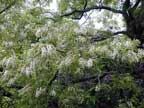
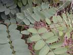
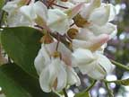
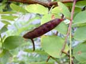
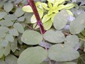
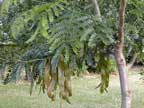

Black locust
Robinia pseudoacacia
Other names
robinia, false acacia
Description
A large deciduous tree ( 25m). It has pale green feathery compound leaves. The flowers are white, fragrant, pea like and hang in clusters. Pod glabrous, irregularly oblong, 2 8 seeded, 35 80 mm long; seeds smooth, brown spotted, oblong. Young branches have thorns.
Similar plants
Honey locust pods are grown for stock fodder, various species of acacia have similar leaves.
Distribution
Robinia grows in dry woods. It is also found in weedy areas, roadsides, fence rows. It is also grown for timber and as an ornamental flowering tree.
Toxin
The plant’s toxic properties have been attributed to several toxins: robin, several glycosides including robitin, an alkaloid robinine. Almost all of the plant can be toxic if ingested. The bark, and to a lesser extent, seeds and twigs have been incriminated. Time of year is not important, although fresh twigs in spring may be appealing. Drought conditions may force animals to eat it.
Species affected
Mainly horses, but also cattle, sheep, chickens and humans, Horse LD 150g of bark.
Clinical signs acute
May be a delay of 1 3 days. Gastrointestinal tract: anorexia, vomiting, diarrhoea, abdominal pain. Cardiorespiratory disturbances: irregular bounding pulse, cyanosis, tachycardia, tachypnoea CNS signs: hyperexcitation, nausea, paralysis. Posterior paralysis has been reported in cattle and horses. May also show haemaglobinuria. In the later stages of poisoning oliguria begins and progresses to death from uraemia up to 12 days later.
Clinical signs chronic
Post mortem signs
Non specific changes. Haemorrhage and oedema can be seen in the gut. Also haemorrhage and degenerative changes may be found in liver and kidneys.
Diagnosis
Based on clinical signs. Presence of plant in gut may not be found due to delay in clinical signs.
Differential diagnosis
1080, acorn, anticoagulant rodentcide, arum lily, ethylene glycol, heavy metals, metaldehyde, nitrate / nitrite, OP poisoning, Oxalis species., superphosphate, Rhododendron, tutu
Treatment
No antidote. Symptomatic care: remove plant ingested gastric lavage/emesis. Adsorbents (activated charcoal) may be helpful. Maintain circulation fluid and blood transfusions. Cardiorespiratory stimulants
Prognosis
Prevention
References
Connor, HE, The Poisonous plants in New Zealand, 2nd ed.,1977, Government Publications Ltd., Wellington
|
 |
|
 |
 |
|
 |
 |
|
|
 |
|
|